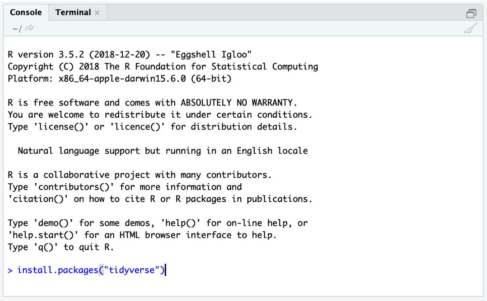

在本章中，我们将重点介绍如何在你的计算机上安装 R 和 R Studio。如果你已经在你的计算机上安装了 R Studio，并且你是一位经验丰富的 R 用户，这些对你来说可能都不是新的。那么你可以跳过本章。如果你以前从未使用过 R ，请耐心等待。
R语言探索
在 这一章，我们将开始我们的 R 宇宙之旅。可能这是你第一次接触编程，你可能会感到有点焦虑。这是可以理解的，但没有理由担心。在过去的二十年里，世界各地成千上万的聪明人为 R 的用户贡献了使其更容易和更方便的方法。我们还将了解一个非常强大的计算机程序，我们可以用它来使编写和运行 R 代码变得不那么繁琐。
尽管如此，与其他你可能使用过的数据分析程序相比，使用 R 仍然更难。 R 社区中最重要的成员之一 Hadley Wickham 曾经强调， R 从根本上不同于基于 图形用户界面 (GUI) 的统计软件 [@grolemund2014hands, Foreword]。GUI 允许你仅通过点击几个按钮来执行数据分析，但你最终只能使用开发人员认为重要的功能。
另一方面， R 没有这些限制，但可能需要更多的背景知识。像任何语言一样， R 需要学习，并且需要实践才能成为熟练的用户。沮丧是这个过程中令人不快但很自然的一部分。在序言中，你可以找到一整个部分，其中我们描述了如果你遇到困难可以做的一些事情。
我们想向你保证，学习 R 是值得的。 R 是最多才多艺、最全面和最常用的统计编程语言。 R 社区每年都在迅速扩大， R 的吸引力如此之大，以至于《纽约时报》也认为值得报道 [@vance2009data]。
无论你是在学术界还是在公司工作，你在 R 中可以做的事情对其他人来说通常看起来像是一种超能力。但这是每个人都可以学习的超能力，只要付出一些时间和精力。话虽如此，现在是开始的时候了。
安装 R 和 R Studio
在我们开始之前，我们必须下载并准备一个计算机程序，使我们能够以方便的方式使用 R 进行统计分析。目前最好的选择可能是 R Studio。这个程序为我们提供了一个用户界面，使我们更容易处理我们的数据、包和输出。最棒的是 R Studio 完全免费，并且可以随时在互联网上下载。最近，R Studio 的在线版本已经 发布，它通过你的网络浏览器为你提供基本相同的界面和功能。然而，在本书中，我们将重点介绍直接安装在我们计算机上的 R Studio 版本。
让我们完成设置 R 和 R Studio 以进行我们的首次编码尝试的必要步骤。
R Studio 是一个界面，它允许我们编写 R 代码并以一种简单的方式运行它。但是 R Studio 与 R 并不相同；它要求 R 软件已经安装在你的计算机上。因此，首先我们必须安装最新的 R 版本。像 R Studio 一样， R 是完全免费的。它可以从 Comprehensive
RArchive Network，或 CRAN 网站下载。你必须下载的 R 类型取决于你使用的是 Windows PC 还是 Mac。关于 R 的一个重要细节是它的 版本。 R 会定期更新，这意味着会有新版本可用。当你的 R 版本变得太旧时，可能会发生某些事情不再有效。因此，定期更新 R 版本是有帮助的，可能大约每年一次，通过重新安装 R 。对于本书，我们使用的是 R 版本 4.0.3。在你安装 R 时，可能已经有更高的版本可用，建议始终安装最新版本。在你下载并安装 R 之后，你可以从 R Studio 网站 下载 “R Studio Desktop”。也有一些 R Studio 版本需要购买许可证，但对于我们的目的来说，这绝对不是必需的。只需下载并安装免费版本的 R Studio Desktop。
第一次打开 R Studio 时，它可能看起来很像图 @ref(fig:rstudio-1) 中的样子。R Studio 中有三个窗格。在右上角，我们有 环境 窗格，它显示了我们在 R 内部定义的（即保存的）对象。在右下角，你可以找到 文件、绘图、包和帮助 窗格。此窗格有多种功能；例如，它用于显示你计算机上的文件、显示绘图和已安装的包，以及访问帮助页面。然而，R Studio 的核心是左侧，在那里你可以找到 控制台。控制台是所有 R 代码输入然后运行的地方。

- R Studio 中还有一个第四个窗格，通常在一开始不显示，即 源 窗格。你可以通过点击菜单中的 文件 > 新建文件 > R 脚本 来打开源窗格。这将在左上角打开一个新的窗格，其中包含一个空的 R 脚本。 R 脚本是将你的代码收集到一个地方的好方法；你也可以将它们保存为扩展名为 “.R” 的文件（例如 myscript.R）在你的计算机上。要在 R 脚本中运行代码，请通过将光标拖过所有相关行来选择它，然后点击右侧的 “运行” 按钮。这会将代码发送到控制台，在那里对其进行评估。一个快捷方式是 Ctrl + R (Windows) 或 Cmd + R (Mac)。
包
我们现在将使用 R 代码安装几个 包。包是 R 如此强大的主要原因之一。它们允许世界各地的专家开发其他人可以下载然后在 R 中使用的 函数 集合。函数是 R 的核心元素；它们允许我们执行预定义类型的操作，通常是在我们自己的数据上。
函数的数学公式 \(f(x)\) 与在 R 中定义函数的方式之间存在着平行关系。在 R 中，一个函数首先要写下它的名字，然后是包含函数输入和/或规范（所谓的 参数）的括号。
假设我们想知道 9 的平方根是多少。在 R 中，我们可以使用 sqrt 函数来实现这一点。我们只需要提供 9 作为函数的输入即可获得结果。你可以自己尝试一下。在控制台中的小箭头 (>) 旁边，写下 sqrt(9) 然后按 Enter。让我们看看会发生什么。
sqrt(9)[1] 3我们现在收到了来自 R 的第一个 输出。它告诉我们 9 的平方根是 3。尽管 R 中有比这个更复杂的函数，但它们都遵循相同的原则：你提供函数所需的参数信息，函数使用此信息进行计算，最后，它为你提供输出。
在 R 中，我们还使用一个名为 install.packages 的函数来 安装包。我们必须告诉这个函数的唯一事情是我们想要安装的包的名称。目前，我们应该安装三个包，因为它们在以后会有所帮助。
{tidyverse}。{tidyverse} 包 [@tidyverse] 不是一个单独的包，而实际上是一个包的捆绑，它使得在 R 中操作和可视化数据变得容易。当我们安装 {tidyverse} 包时，这同时为我们提供了 {ggplot2}、{dplyr}、{tidyr}、{readr}、{purrr}、{stringr} 和 {forcats} 包。近年来，包含在 tidyverse 中的函数在 R 社区中变得非常流行，并被许多研究人员、程序员和数据科学家使用。如果你想了解更多关于 tidyverse 的信息，你可以访问它的 网站。
{meta}。这个包包含了一些函数，可以很容易地运行不同类型的 meta 分析 [@meta]。我们主要会在本指南中关注这个包，因为它易于使用，文档齐全，而且非常通用。关于 {meta} 包的更多信息可以在其 网站 上找到。
{metafor}。{metafor} 包 [@urviecht] 也致力于进行 meta 分析，并且在功能方面是一个真正的强大工具。由于我们有时会在后面的章节中使用这个包，并且由于 {meta} 包在许多应用中使用 {metafor}，因此最好安装它。 {metafor} 包还为各种与 meta 分析相关的主题提供了优秀的 文档。
install.packages 函数只需要我们想要安装的包的名称作为输入。一个接一个的包，我们的代码应该看起来像这样：
install.packages("tidyverse")
install.packages("meta")
install.packages("metafor")只需将上面的代码输入到控制台中；然后按 Enter 开始安装（见图 @ref(fig:rstudio-1)）。

不要忘记将包名称放入引号（
""）中。否则，你将收到一条错误消息。
在你点击 Enter 之后， R 将开始安装该包并打印一些关于安装进度的信息。当 install.packages 函数完成时，该包就可以使用了。已安装的包被添加到 R 的 系统库 中。这个系统库可以在你的 R Studio 屏幕左下角的 包 窗格中访问。每当我们想使用已安装的包时，我们可以使用 library 函数从我们的库中加载它。让我们尝试一下，并加载 {tidyverse} 包。
library(tidyverse){dmetar} 包
在本指南中，我们希望使研究人员能够尽可能轻松地进行 meta 分析。尽管有一些很棒的包，比如 {meta} 和 {metafor} 包，它们完成了大部分繁重的工作，但我们仍然认为 meta 分析的某些方面很重要，但在目前 R 中不容易做到，特别是如果你没有编程或统计背景。
为了填补这个空白，我们开发了 {dmetar} 包，它是本书的配套 R 包。 {dmetar} 包有自己的文档，可以在 网上 找到。 {dmetar} 包的函数为 {meta} 和 {metafor} 包（以及其他一些更高级的包）提供了额外的功能，我们将在本指南中经常使用它们。包含在 {dmetar} 包中的大多数函数以及它们如何改善你的 meta 分析工作流程将在本书中详细描述。我们在本指南中使用的大多数示例数据集也包含在 {dmetar} 中。
虽然强烈建议，但不是必须安装 {dmetar} 包才能完成本指南。对于该包的每个函数，我们也会提供源代码，可以用来在你的计算机上本地保存该函数，以及这些函数所依赖的其他 R 包。我们还将为包含在该包中的数据集提供补充下载链接。
但是，事先安装 {dmetar} 包要方便得多，因为这会预先安装所有函数和数据集在你的计算机上。要安装 {dmetar} 包，你计算机上的 R 版本必须为 3.6 或更高版本。如果你最近（重新）安装了 R，情况可能就是这样。要检查你的 R 版本是否足够新，你可以将此行代码粘贴到控制台中，然后按 Enter。
R.Version()$version.string这将显示你当前的 R 版本。如果 R 版本低于 3.6，你将必须更新它。互联网上有一些很好的 博客文章 提供了有关如何执行此操作的指导。
如果你想安装 {dmetar}，首先需要安装一个包在你的计算机上。这个包叫做 {devtools}。所以，如果 {devtools} 还没有在你的计算机上，你可以像我们之前做的那样安装它。
install.packages("devtools")然后你可以使用这行代码安装 {dmetar}：
devtools::install_github("MathiasHarrer/dmetar")这将启动安装过程。很可能安装需要一些时间，因为必须与 {dmetar} 包一起安装其他几个包才能使其正常工作。在安装过程中，安装管理器可能会询问你是否要更新计算机上现有的 R 包。输出可能看起来像这样：
## 这些包有更新的版本可用。
## 你想更新哪个？
##
## 1：全部
## 2：仅 CRAN 包
## 3：无
## 4：ggpubr (0.2.2 -> 0.2.3) [CRAN]
## 5：zip (2.0.3 -> 2.0.4) [CRAN]
##
## 输入一个或多个数字，或输入一个空行以跳过更新：当你收到此消息时，最好告诉安装管理器不要更新任何包。在我们的示例中，这意味着将 3 粘贴到控制台中，然后按 Enter。同样地，当安装管理器提出这个问题时：
## 有二进制版本可用，但源版本较新：
##
## [...]
##
## 你想从需要编译的源安装包吗？
## y/n：最好选择 n（否）。如果使用此策略安装失败（意味着你收到一个 Error），请再次运行安装，但这次更新所有包。
在编写本书和开发该包时，我们确保每个人都可以毫无错误地安装它。尽管如此，仍然有可能第一次尝试安装该包时不起作用。如果安装问题仍然存在，你可以查看本书序言中的 “联系我们” 部分。
数据准备与导入
本章将告诉你如何使用 R Studio 将数据导入 R 。数据准备有时可能很繁琐和耗尽精力，但它是所有后续步骤的支柱。因此，我们必须密切注意将数据导入正确的格式，然后才能继续。
通常，导入到 R 中的数据首先存储在 Microsoft Excel 电子表格中。我们建议在那里存储你的数据，因为这使得导入变得非常容易。在 Excel 中准备数据时，有一些 “应该做和不应该做” 的事项。
命名电子表格的列非常重要。如果你已经在 Excel 中充分命名了工作表的列，那么你可以在以后节省大量时间，因为你的数据不必使用 R 进行转换。“命名” 电子表格的列仅仅意味着将变量的名称写入列的第一行； R 将自动检测到这是列的名称。
列名不应包含任何空格。要在列名中分隔两个单词，可以使用下划线或点（例如 “column_name”）。
Excel 电子表格中列的顺序无关紧要。它们只需要正确标记。
也没有必要以任何方式格式化列。如果你在电子表格的第一行中键入列名， R 将自动将其检测为列名。
同样重要的是要知道导入可能会扭曲特殊字符，如 ä、ü、ö、á、é、ê 等。你可能想在继续之前将它们转换为 “正常” 字母。
确保你的 Excel 文件只包含一个工作表。
如果你有一个或几个曾经包含数据的空行或列，请确保完全删除这些列/行，因为 R 可能会认为这些列包含（缺失的）数据并也导入它们。
让我们从一个示例数据集开始。假设你计划进行一项自杀预防计划的 meta 分析。你想要在你的研究中关注的结果是自杀意念的严重程度（即个体思考、考虑或计划结束其生命的程度），通过问卷评估。你已经完成了研究搜索和数据提取，现在想在 R 中导入你的 meta 分析数据。
因此，下一个任务是准备一个 Excel 工作表，其中包含所有相关数据。表 @ref(tab:suicidedata) 显示了我们想要导入的所有数据。在第一行中，此表还显示了我们如何根据我们列出的规则在 Excel 文件中命名我们的列。我们可以看到电子表格在一行中列出了每个研究。对于每个研究，干预组和对照组都包括样本量 (\(n\))、均值和标准差 (\(SD\))。这是计算效应量所需的结果数据，我们将在第 @ref(effects) 章中详细介绍。以下三列包含我们稍后要作为 meta 分析一部分进行分析的变量。
我们为你准备了一个名为 “SuicidePrevention.xlsx” 的 Excel 文件，其中包含完全相同的数据。该文件可以从 Internet 下载。
| Author | N | Mean | SD | N | Mean | SD | Year | Age Group | Control Group |
|---|---|---|---|---|---|---|---|---|---|
| Berry et al. | 90 | 14.98 | 3.29 | 95 | 15.54 | 4.41 | 2006 | general | WLC |
| DeVries et al. | 77 | 16.21 | 5.35 | 69 | 20.13 | 7.43 | 2019 | older adult | no intervention |
| Fleming et al. | 30 | 3.01 | 0.87 | 30 | 3.13 | 1.23 | 2006 | general | no intervention |
| Hunt & Burke | 64 | 19.32 | 6.41 | 65 | 20.22 | 7.62 | 2011 | general | WLC |
| McCarthy et al. | 50 | 4.54 | 2.75 | 50 | 5.61 | 2.66 | 1997 | general | WLC |
| ... | ... | ... | ... | ... | ... | ... | ... | ... | ... |
为了在 R Studio 中导入我们的 Excel 文件，我们首先必须设置一个 工作目录。工作目录是你计算机上的一个文件夹， R 可以从中使用数据，并且在其中保存输出。要设置工作目录，你首先必须在你的计算机上创建一个文件夹，你希望将所有 meta 分析数据和结果保存在其中。你还应该将我们要导入的 “SuicidePrevention.xlsx” 文件保存在此文件夹中。
然后启动 R Studio 并在左下角的 文件 窗格中打开你新创建的文件夹。一旦你打开了你的文件夹，你应该显示你刚刚保存在那里的 Excel 文件。然后通过点击窗格顶部的小齿轮，然后在弹出菜单中点击 设置为工作目录 来将此文件夹设置为工作目录。这将使当前打开的文件夹成为工作目录。
我们现在可以继续并将数据导入 R 。在 文件 窗格中，只需点击 “SuicidePrevention.xlsx” 文件。然后点击 导入数据集…。现在应该弹出一个导入助手，它也在加载你的数据的预览。这有时可能很耗时，所以你可以跳过这一步，直接点击 导入。
你的数据集应该以名称 SuicidePrevention 列在右上角的 环境 窗格中。这意味着你的数据现在已加载并且可以被 R 代码使用。像我们在这里导入的表格数据集在 R 中被称为 数据框 (data.frame)。数据框是具有列和行的数据集，就像我们刚刚导入的 Excel 电子表格一样。
{openxlsx}
也可以使用代码直接导入数据文件。我们可以用来做到这一点的一个好的包叫做 {openxslx} [@openxlsx]。与所有 R 包一样，你必须首先安装它。然后你可以使用 read.xlsx 函数导入 Excel 工作表。
如果该文件保存在你的工作目录中，你只需为该函数提供该文件的名称，并将导入的数据分配给 R 中的一个对象。例如，如果我们希望我们的数据集在 R 中具有名称 data，我们可以使用此代码：
library(openxlsx) data <- read.xlsx("SuicidePrevention.xlsx")
数据操作
现在我们已经使用 R Studio 导入了我们的第一个数据集，让我们做一些操作。数据整理，意味着转换数据以使其可用于进一步分析，是所有数据分析的重要组成部分。一些职业，例如数据科学家，花费他们的大部分时间将原始的 “不整洁” 的数据变成 “整洁” 的数据集。 {tidyverse} 的函数为数据整理提供了一个出色的工具箱。如果你还没有从你的库中加载该包，你应该立即加载它以用于以下示例。
library(tidyverse)类转换
首先，我们应该看一下我们在上一章中导入的 SuicidePrevention 数据集。为此，我们可以使用 {tidyverse} 提供的 glimpse 函数。
glimpse(SuicidePrevention)Rows: 9
Columns: 10
$ author <chr> "Berry et al.", "DeVries et al.", "Fleming et al.", "Hunt & …
$ n.e <chr> "90", "77", "30", "64", "50", "109", "60", "40", "51"
$ mean.e <chr> "14.98", "16.21", "3.01", "19.32", "4.54", "15.11", "3.44", …
$ sd.e <chr> "3.29", "5.35", "0.87", "6.41", "2.75", "4.63", "1.26", "0.7…
$ n.c <dbl> 95, 69, 30, 65, 50, 111, 60, 40, 56
$ mean.c <chr> "15.54", "20.13", "3.13", "20.22", "5.61", "16.46", "3.42", …
$ sd.c <chr> "4.41", "7.43", "1.23", "7.62", "2.66", "5.39", "1.88", "1.4…
$ pubyear <dbl> 2006, 2019, 2006, 2011, 1997, 2000, 2013, 2015, 2014
$ age_group <chr> "general", "older adult", "general", "general", "general", "…
$ control <chr> "WLC", "no intervention", "no intervention", "WLC", "WLC", "…我们看到这为我们提供了关于我们存储在数据集的每一列中的数据类型的详细信息。有不同的缩写表示不同的数据类型。在 R 中，它们被称为 类。
<num>代表 numeric。这是所有存储为数字的数据（例如 1.02）。<chr>代表 character。这是所有存储为单词的数据。<log>代表 logical。这些是二进制变量，意味着它们表明一个条件是TRUE还是FALSE。<factor>代表 factor。因子存储为数字，每个数字表示变量的不同级别。变量可能的因子级别可能是 1 = “low”，2 = “medium”，3 = “high”。
我们还可以使用 class 函数检查列的类。我们可以通过将 $ 运算符添加到其名称，然后再添加列的名称来直接访问数据框中的列。让我们尝试一下。首先，我们让 R 为我们提供 n.e 列中包含的数据。之后，我们检查该列的类。
SuicidePrevention$n.e[1] "90" "77" "30" "64" "50" "109" "60" "40" "51" class(SuicidePrevention$n.e)[1] "character"我们看到包含干预组样本量的 n.e 列的类是 character。但是等等，这是错误的类！在导入过程中，此列被错误地分类为 character 变量，而它实际上应该具有 numeric 类。这对进一步的分析步骤有影响。例如，如果我们想计算平均样本量，我们会得到以下警告：
mean(SuicidePrevention$n.e)Warning in mean.default(SuicidePrevention$n.e): argument is not numeric or
logical: returning NA[1] NA为了使我们的数据集可用，我们通常必须首先将我们的列转换为正确的类。为此，我们可以使用一组以 “as.” 开头的函数：as.numeric、as.character、as.logical 和 as.factor。让我们来看几个例子。
在之前 glimpse 函数的输出中，我们看到有几个列被赋予了 character 类，而它们应该是 numeric。这涉及到列 n.e、mean.e、sd.e、mean.c 和 sd.c。我们看到出版年份 pubyear 具有 <dbl> 类。这代表 double，意味着该列是一个数值向量。这是一个历史异常现象，在 R 中 double 和 numeric 都用于指代数值数据类型。然而，通常这没有实际的实际意义。
然而，在我们的数据集中，一些数值被编码为 字符，这将导致下游问题，因此我们应该使用 as.numeric 函数更改该类。我们为该函数提供我们要更改的列，然后使用 赋值运算符 (<-) 将输出保存回其原始位置。这导致了以下代码。
SuicidePrevention$n.e <- as.numeric(SuicidePrevention$n.e)
SuicidePrevention$mean.e <- as.numeric(SuicidePrevention$mean.e)
SuicidePrevention$sd.e <- as.numeric(SuicidePrevention$sd.e)
SuicidePrevention$n.c <- as.numeric(SuicidePrevention$n.c)
SuicidePrevention$mean.c <- as.numeric(SuicidePrevention$mean.c)
SuicidePrevention$sd.c <- as.numeric(SuicidePrevention$sd.c)
SuicidePrevention$n.c <- as.numeric(SuicidePrevention$n.c)我们还在 glimpse 输出中看到 age_group 和 control，我们数据中的子组，被编码为字符。然而，实际上，将它们编码为因子更合适，每个因子级别有两个。我们可以使用 as.factor 函数更改类。
SuicidePrevention$age_group <- as.factor(SuicidePrevention$age_group)
SuicidePrevention$control <- as.factor(SuicidePrevention$control)使用 levels 和 nlevels 函数，我们还可以查看因子标签和因子中的级别数。
levels(SuicidePrevention$age_group)[1] "general" "older adult"nlevels(SuicidePrevention$age_group)[1] 2我们还可以使用 levels 函数更改因子标签的名称。我们只需为原始标签分配新名称。要在 R 中执行此操作，我们必须使用 concatenate，或 c 函数。此函数可以将两个或多个单词或数字连接在一起并创建一个元素。让我们尝试一下。
new.factor.levels <- c("gen", "older")
new.factor.levels[1] "gen" "older"完美。我们现在可以使用新创建的 new.factor.levels 对象，并将其分配给 age_group 列的因子标签。
levels(SuicidePrevention$age_group) <- new.factor.levels让我们检查一下重命名是否有效。
SuicidePrevention$age_group[1] gen older gen gen gen gen gen older older
Levels: gen older也可以使用 as.logical 创建逻辑值。假设我们想要重新编码 pubyear 列，以便它仅显示研究是否在 2009 年之后发表。为此，我们必须通过代码定义一个是/否规则。我们可以使用 “大于或等于” 运算符 >= 来做到这一点，然后将其用作 as.logical 函数的输入。
SuicidePrevention$pubyear[1] 2006 2019 2006 2011 1997 2000 2013 2015 2014as.logical(SuicidePrevention$pubyear >= 2010)[1] FALSE TRUE FALSE TRUE FALSE FALSE TRUE TRUE TRUE我们可以看到，这会将 pubyear 中的每个元素编码为 TRUE 或 FALSE，具体取决于发表年份是否大于或等于 2010。
数据切片
在 R 中，有几种方法可以提取数据框的子集。我们已经介绍了一种方法，即 $ 运算符，它可以用于提取列。从数据集中提取切片的更通用方法是使用方括号。我们使用方括号时必须遵循的通用形式是 data.frame[rows, columns]。始终可以通过使用它们在数据集中出现的数字来提取行和列。例如，我们可以使用以下代码提取数据框第二行中的数据。
SuicidePrevention[2,] author n.e mean.e sd.e n.c mean.c sd.c pubyear age_group
2 DeVries et al. 77 16.21 5.35 69 20.13 7.43 2019 older
control
2 no intervention我们可以更具体地告诉 R ，我们只想要第二行第一列中的信息。
SuicidePrevention[2, 1][1] "DeVries et al."要选择特定的切片，我们必须再次使用连接 (c) 函数。例如，如果我们想提取第 2 行和第 3 行以及第 4 列和第 6 列，我们可以使用此代码。
SuicidePrevention[c(2,3), c(4,6)] sd.e mean.c
2 5.35 20.13
3 0.87 3.13通常只能按行号选择行。但是，对于列，也可以提供列名称而不是数字。
SuicidePrevention[, c("author", "control")] author control
1 Berry et al. WLC
2 DeVries et al. no intervention
3 Fleming et al. no intervention
4 Hunt & Burke WLC
5 McCarthy et al. WLC
6 Meijer et al. no intervention
7 Rivera et al. no intervention
8 Watkins et al. no intervention
9 Zaytsev et al. no intervention另一种可能性是根据行值 过滤 数据集。我们可以使用 filter 函数来做到这一点。在该函数中，我们需要指定我们的数据集名称，以及一个过滤逻辑。一个相对简单的例子是过滤所有 n.e 等于或小于 50 的研究。
filter(SuicidePrevention, n.e <= 50) author n.e mean.e sd.e n.c mean.c sd.c pubyear age_group
1 Fleming et al. 30 3.01 0.87 30 3.13 1.23 2006 gen
2 McCarthy et al. 50 4.54 2.75 50 5.61 2.66 1997 gen
3 Watkins et al. 40 7.10 0.76 40 7.38 1.41 2015 older
control
1 no intervention
2 WLC
3 no intervention但也可以按名称进行过滤。假设我们想提取作者为 Meijer 和 Zaytsev 的研究。为此，我们必须使用 %in% 运算符和连接函数来定义我们的过滤逻辑。
filter(SuicidePrevention, author %in% c("Meijer et al.",
"Zaytsev et al.")) author n.e mean.e sd.e n.c mean.c sd.c pubyear age_group
1 Meijer et al. 109 15.11 4.63 111 16.46 5.39 2000 gen
2 Zaytsev et al. 51 23.74 7.24 56 24.91 10.65 2014 older
control
1 no intervention
2 no intervention相反，我们也可以通过在过滤逻辑前放置一个感叹号来提取所有除了 Meijer 和 Zaytsev 的研究。
filter(SuicidePrevention, !author %in% c("Meijer et al.",
"Zaytsev et al."))数据转换
当然，也可以更改 R 数据框中的特定值，或者扩展它们。要更改我们保存在 R 内部的数据，我们必须使用 赋值运算符。让我们重新使用我们之前学到的关于数据切片的知识来更改我们数据集中的特定值。假设我们犯了一个错误，并且 DeVries et al. 研究的发表年份错误地报告为 2019 年，而它应该是 2018 年。我们可以通过相应地切片我们的数据集，然后分配新值来更改该值。记住，DeVries et al. 的结果在数据集的第二行中报告。
SuicidePrevention[2, "pubyear"] <- 2018
SuicidePrevention[2, "pubyear"]## [1] 2018也可以一次更改多个值。例如，如果我们想在我们的数据集中为每个干预组均值加 5，我们可以使用以下代码来做到这一点。
SuicidePrevention$mean.e + 5[1] 19.98 21.21 8.01 24.32 9.54 20.11 8.44 12.10 28.74我们还可以使用两列或多列来进行计算。一个实际相关的例子是我们可能对计算每个研究的干预组和对照组均值之间的 均值差异 感兴趣。与其他编程语言相比，这在 R 中非常容易。
SuicidePrevention$mean.e - SuicidePrevention$mean.c[1] -0.56 -3.92 -0.12 -0.90 -1.07 -1.35 0.02 -0.28 -1.17正如你所看到的，这获取了每个研究的干预组均值，然后减去对照组均值，每次都使用同一行的值。假设我们想在以后使用这个均值差异。因此，我们想将它保存为一个名为 md 的额外对象，并将它作为一个新列添加到我们的 SuicidePrevention 数据框中。使用赋值运算符很容易做到这两点。
md <- SuicidePrevention$mean.e - SuicidePrevention$mean.c
SuicidePrevention$md <- SuicidePrevention$mean.e -
SuicidePrevention$mean.c我们想向你展示的最后一件事是 管道运算符。在 R 中，管道写成 %>%。管道本质上允许我们将一个函数应用于一个对象，而无需直接在函数调用中指定对象名称。我们只需使用管道运算符连接对象和函数。让我们给你一个简单的例子。如果我们想计算对照组中的平均样本量，我们可以像这样使用 mean 函数和管道运算符：
SuicidePrevention$n.c %>% mean()[1] 64诚然，在这个例子中，很难看到这种管道的附加价值。管道的特殊优势在于它们允许我们将许多函数 链接 在一起。假设我们想知道平均对照组样本量的平方根，但仅适用于 2009 年之后发表的研究。管道让我们可以在一步中方便地做到这一点。
SuicidePrevention %>%
filter(pubyear > 2009) %>%
pull(n.c) %>%
mean() %>%
sqrt()[1] 7.615773在管道中，我们使用了一个我们之前没有介绍的函数，即 pull 函数。这个函数可以被看作是 $ 运算符的等价物，我们可以在管道中使用它。它只是 “拉出” 我们在函数中指定的变量，因此它可以被转发到管道的下一部分。
访问 R 文档
R 中的许多函数都需要几个参数，并且不可能记住如何正确使用所有函数。谢天谢地，没有必要用心记住如何使用每个函数。R Studio 让我们很容易访问 R 文档，其中每个函数都有一个详细的描述页面。
有两种方法可以搜索函数文档页面。第一种是访问 R Studio 左下角的 帮助 窗格，然后使用搜索栏查找关于特定函数的信息。更方便的方法是简单地运行 ?，后跟控制台中函数的名称，例如 ?mean。这将自动打开该函数的文档条目。
一个函数的 R 文档通常至少包含一个 用法、参数 和 示例 部分。参数 和 示例 部分通常对于理解如何使用一个函数特别有帮助。
保存数据
一旦我们用我们的数据完成了转换并将它们保存在 R 内部，我们必须在某个时候 导出 它。我们建议你在保存 R 数据框时使用两种类型的文件格式：.rda 和 .csv。
文件结尾 .rda 代表 R 数据。这是一种专门为 R 设计的文件类型，具有所有的优点和缺点。.rda 文件的优点是它们可以很容易地在 R 中重新打开，并且没有你的数据在导出过程中可能会被扭曲的风险。它们